Abstract / 연구 개요
운전자의 ‘힘 느낌’을 식별 절차로
이 연구는 1.7 t Sunward SWE17 굴착기의 작업을 관입·절삭·상차로 나눈다. 약 3초의 관입에서 얻은 저항력 최대값과 평균값을 퍼지 추론에 넣어 경도 지수 kd를 구하고, 이를 밀도·점착력·두 마찰각으로 변환한다. 이어 개선 FEE 모델로 절삭 저항을 예측한다. 별도의 시험 굴착 없이 매 굴착에서 토양 정보를 갱신한다는 점이 핵심이며, 검증 범위는 제한된 토양과 정해진 굴착 조건에 묶여 있다.
식별과 예측을 한 작업에
관입에서 확보한 정보를 곧바로 절삭 예측에 사용해 별도 식별용 굴착의 부담을 줄인다.
빠른 계산, 필요한 관측
조회표 계산은 1~2 샘플 내 수행된다. 하지만 입력을 모으는 약 3초의 관입 구간은 필요하다.
현장에서는 불확실성이 커진다
현장 힘 예측 RMSE는 166 N. 토양 파라미터 자체의 정확도는 실측 기준값이 없어 확인하지 못했다.
왜 관입 힘인가
자동 굴착기가 궤적과 제어를 토양에 맞추려면, 지금 버킷 앞의 흙이 얼마나 큰 저항을 만들지 알아야 한다. 숙련 운전자는 버킷을 넣는 순간의 힘으로 흙의 상태를 가늠한다. 이 논문은 그 판단을 관입 저항의 두 통계량으로 단순화한다.
연구가 비교한 기존 식별 방법들은 계산 부담이 크거나, 예측에 앞서 별도의 시험 굴착을 요구했다. 저자들은 토양 식별에 퍼지 추론을 도입하고, 식별과 예측을 한 굴착 안에 배치하는 접근을 제안한다.
| 접근 | 해결해야 할 부담 |
|---|---|
| 탐색 + 경사하강 Luengo, 2002 | 파라미터 탐색에 따른 계산량이 크다. |
| 파라미터 공간 교차 Hong, 2001 | 식별 정확도를 높이는 데 한계가 있다. |
| Newton–Raphson Althoefer, 2009 | 식별하는 파라미터는 2개로, 이 연구의 FEE 입력 4개에 부족하다. |
| 최적화 문제 Kim, 2013 | 10초 이상의 시험 굴착을 한 차례 선행해야 한다. |
- 01 · 관측관입 저항압력에서 접촉력을 구해 최대·평균 추출
- 02 · 식별퍼지 경도두 입력을 경도 지수 kd로 압축
- 03 · 변환토양 파라미터4차 다항식으로 γ, c, δ, φ 계산
- 04 · 예측절삭 저항토양과 기하를 FEE 모델에 입력
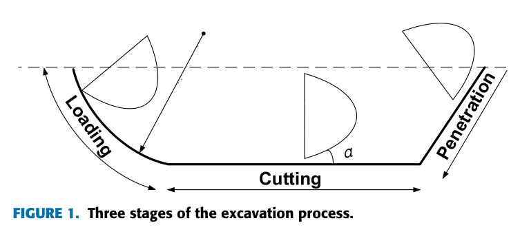
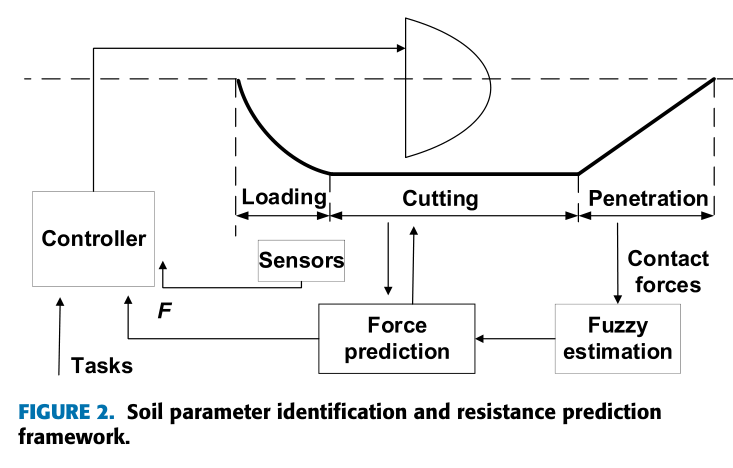
두 개의 힘 통계량에서
네 개의 토양 파라미터로
같은 조건으로 찔러 넣고, 저항을 비교한다
출발점은 토양 5종의 관입 시험이다. 관입 깊이 0.3 m, 각도 40°와 자세·속도를 고정하고 저항을 비교한다. 시험에서는 단단한 토양일수록 약 3초 구간의 최대 저항과 평균 저항이 커지는 경향이 나타났다. 힘은 실린더 압력을 동역학 모델에 대입해 계산한다.
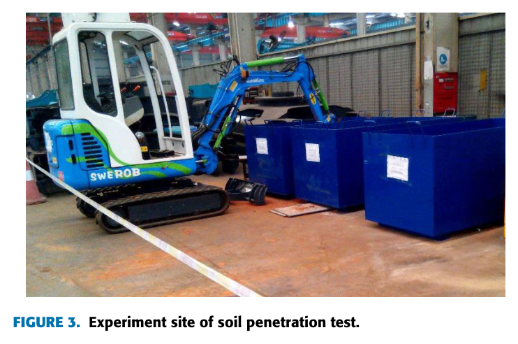
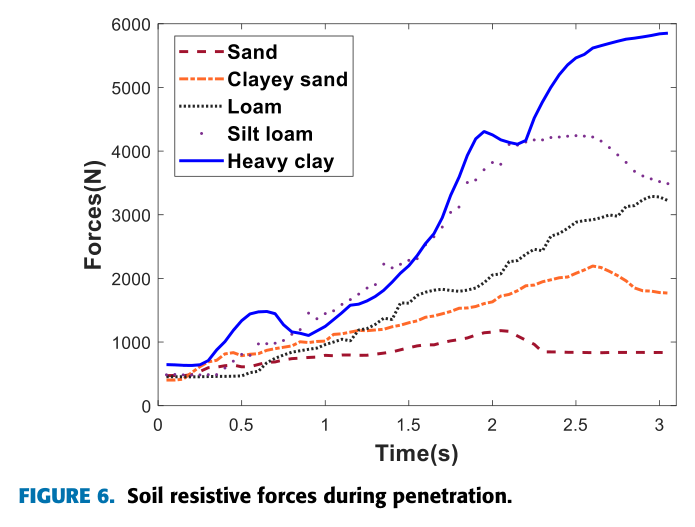
| 토양 | 밀도 γ kg/m³ | 점착력 c kPa | 흙–날 마찰각 δ ° | 내부 마찰각 φ ° |
|---|---|---|---|---|
| 모래 | 1604 | 1.0 | 21.8 | 25.2 |
| 점토질 모래 | 1682 | 7.1 | 24.2 | 26.3 |
| 양토 | 1753 | 13.2 | 28.4 | 32.0 |
| 미사질 양토 | 1839 | 16.4 | 25.6 | 33.7 |
| 중점토 | 2163 | 24.7 | 30.1 | 34.6 |
퍼지 추론으로 경도 지수를 만든다
입력은 최대 저항 Fmax(0~6 kN)와 평균 저항 Favg(0~3.2 kN)다. 두 값을 정규화한 뒤 삼각 소속함수의 5단계(VS·SL·ME·RL·LE)로 표현한다. Mamdani 추론과 중심법 비퍼지화를 거치면, 매우 무름에서 매우 단단함까지를 나타내는 경도 지수 kd를 얻는다.
Favg = (1/N) ∑n=1N Fs,n
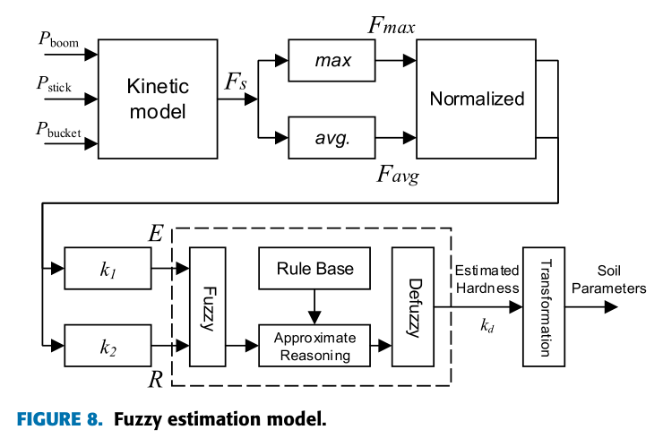
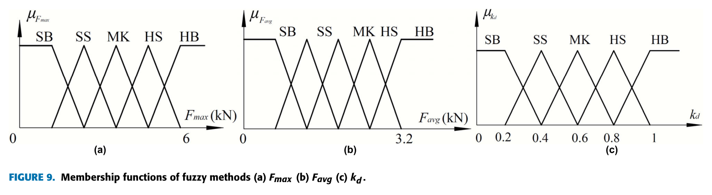
| 토양 | 최소 | 최대 | 평균 |
|---|---|---|---|
| 모래 | 0.181 | 0.211 | 0.196 |
| 점토질 모래 | 0.374 | 0.445 | 0.410 |
| 양토 | 0.509 | 0.606 | 0.558 |
| 미사질 양토 | 0.641 | 0.792 | 0.717 |
| 중점토 | 0.879 | 1.000 | 0.940 |
경도 하나를 네 물성값으로 변환한다
다음 단계는 최소제곱으로 맞춘 4차 다항식이다. 경도 지수 하나에서 밀도 γ, 점착력 c, 흙–날 마찰각 δ, 내부 마찰각 φ를 계산한다.
γ = 4201.9kd4 − 7540kd3 + 4910kd2 − 963.7kd + 1652.3
c = 584.7kd4 − 1303.7kd3 + 997kd2 − 272.4kd + 25.1
δ = 972.8kd4 − 2152kd3 + 1629kd2 − 479.6kd + 68.2
φ = 637.7kd4 − 1539kd3 + 1281kd2 − 408.72kd + 67
흙의 복잡한 성질을 경도 한 숫자로 압축한 뒤,
네 개의 물성값으로 다시 펼친다.
이 구조는 계산을 가볍게 만들지만, 네 파라미터를 독립적으로 측정하는 것은 아니다. 모두 같은 경도에 연결된 경험적 관계를 따른다. 학습에 없는 흙도 이 관계로 표현할 수 있는가가 일반화의 핵심 질문이다. 기준 범위 안에서는 보간에 기대며, 범위를 벗어난 외삽의 신뢰성은 별도로 확인해야 한다.
식별한 흙으로 절삭력을 예측한다
절삭 단계에는 Singh의 개선 FEE(Fundamental Earthmoving Equation, 기본 토공 방정식) 모델을 사용한다. 버킷 날 앞의 흙을 쐐기로 보고, 파괴면을 따라 미끄러지는 데 필요한 힘을 토양 자중·점착·상재하중의 기여로 나눈다.
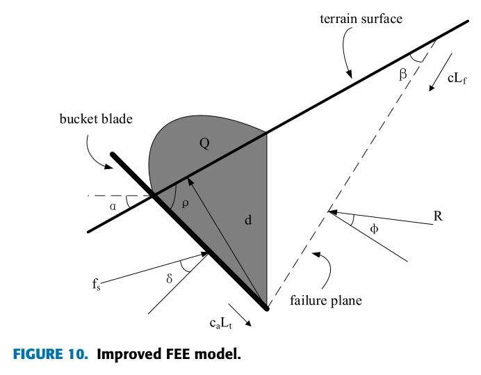
Fsoil = wγgd2Nγ + wcdNc + VsγgNq
∠F = π/2 − ρ − δ
| 기호 | 역할 |
|---|---|
| d, w | 버킷 날의 깊이와 폭. |
| α, ρ, β | 각각 지형 경사, 절삭각, 토양 파괴면의 각도. |
| Vs | 날이 쓸고 지나간 흙의 부피. 상재하중 항에 반영된다. |
| Nγ, Nc, Nq | β·φ·ρ·δ·α에 따른 삼각함수 계수. 자중·점착·상재하중 항에 각각 대응한다. |
| γ, c, δ, φ | 관입 단계에서 식별한 토양 파라미터. |
버킷 자세·형상·지형을 알면 기하 입력 d, w, α, ρ, Vs를 계산할 수 있다. 따라서 관입에서 토양 파라미터를 채워 넣으면 절삭력 예측이 가능해진다.
구현 시 단위 주의. 표와 회귀식의 점착력은 kPa로 제시되어 있다. 길이를 m, 힘을 N으로 계산하는 FEE 구현에서는 점착력을 Pa로 변환하고, 삼각함수의 각도 단위도 일치시켜야 한다.
비교 기준인 접촉력도 압력에서 계산한다
실험의 접촉력은 실린더 압력에서 출발한다. 압력과 유효 면적으로 실린더 힘을 계산하고, 기구학을 통해 관절 토크로 변환한 뒤 중력의 기여를 뺀다.
τ = M(θ)θ̈ + C(θ, θ̇)θ̇ + G(θ) + JTF
JTF ≈ τ − G(θ)
Fi = P1iA1i − P2iA2i
속도와 가속도가 작다는 가정 아래 관성항과 코리올리항을 생략한다. 여기서 τ − G는 접촉력에 대응하는 관절 토크이며, 접촉력 F는 자코비안 J를 통해 구한다. 따라서 중력 모델의 오차는 접촉력 추정에도 영향을 준다.
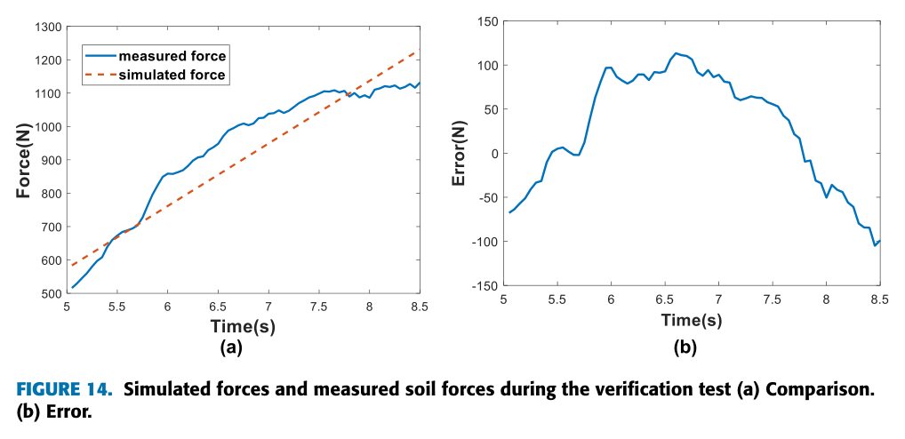
실차에서 확인된 것
실험 플랫폼은 1.7 t급 Sunward SWE17이다. 드로와이어 변위계 3개와 압력센서 6개(IFM PT5500)를 사용하며, DSP(SWMC3)와 MATLAB GUI가 CAN으로 연결된다. 샘플링 주기는 약 20 ms다.
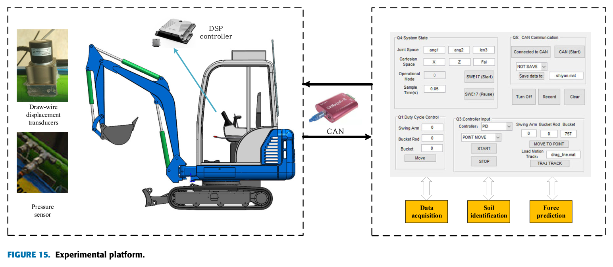
Test 01 / 상자 시험
물성값을 아는 토양
최대 오차 344 N · 12.8%
깊이 0.25 m · 수평 0.8 m
Test 02 / 현장 시험
물성값을 모르는 토양
최대 오차 313 N · 22%
여러 회 시험의 평균 결과
시험 1 — 알려진 토양의 파라미터와 힘 예측
상자 시험에서는 깊이 0.25 m, 수평 이동 0.8 m의 궤적을 사용했다. 관입·절삭·상차 단계 사이에는 정지가 있으며, 절삭 구간에서 모델 예측과 측정 기반 힘을 비교한다.
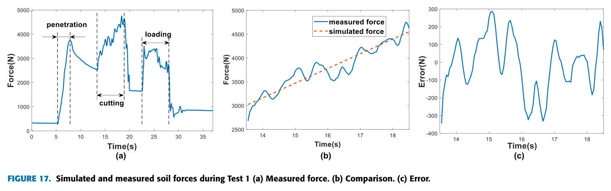
| 파라미터 | 실제값 | 추정값 |
|---|---|---|
| 경도 kd | — | 0.512 |
| 밀도 γ · kg/m³ | 1753 | 1733 |
| 점착력 c · kPa | 13.3 | 12.1 |
| 흙–날 마찰각 δ · ° | 28.4 | 27.7 |
| 내부 마찰각 φ · ° | 32.0 | 30.7 |
시험 2 — 현장 흙에서도 힘의 추세를 따라가는가
현장 시험에서 추정한 값은 kd = 0.252, γ = 1619 kg/m³, c = 1.2 kPa, δ = 20.3°, φ = 23.4°다. 여러 회 시험의 평균 결과에서 힘 예측 RMSE는 166 N, 최대 오차는 313 N(22%)으로 보고된다.
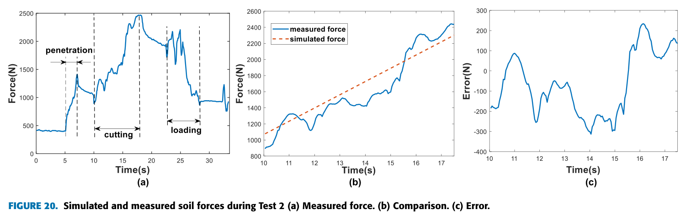
상자 시험에 비해 현장 시험의 RMSE와 보고된 최대 상대오차가 커졌다. 다만 두 시험의 힘 규모와 조건이 다르므로, 상대오차 차이만으로 일반화 성능을 단정하기는 어렵다. 특히 현장 결과는 힘 예측의 간접 검증이며, 네 토양 파라미터가 각각 정확하다는 증거는 아니다.
오차 지표 읽기. 153 N·166 N은 RMSE이고, 12.8%·22%는 제공된 요약의 최대 오차에 붙은 상대값이다. 서로 다른 지표이므로 ‘RMSE 12.8%’처럼 합쳐 읽지 않는다. 상대값의 정규화 기준은 제공된 노트에 명시되어 있지 않다.
빠른 식별이 성립하는 조건
이 연구의 성과는 간결한 식별 모델을 실제 굴착 흐름에 넣었다는 데 있다. 그 간결함을 얻기 위해 제한한 조건도 함께 보아야 한다.
| 검증 범위와 한계 | 적용에 주는 의미 |
|---|---|
| 토양 5종 기반 규칙표 | 새 현장의 토양이 기존 경도–물성 관계를 따르는지 확인해야 한다. 후속 방향은 토양 종류 확대와 유한요소 기반 데이터베이스 보강이다. |
| 고정 관입 자세 | 힘의 차이가 토양 때문인지, 관입 각도·속도·깊이 때문인지 분리해야 한다. |
| 수평 직선 절삭 | 곡선 궤적이나 다른 작업 동작으로의 확장은 이 실험만으로 검증되지 않았다. |
| 정적 동역학 근사 | 빠른 움직임에서는 생략한 관성항 등의 영향이 커질 수 있다. 중력 모델의 정확도도 필요하다. |
| 현장 물성 기준값 부재 | 힘 예측 오차와 토양 파라미터 식별 오차를 별도로 판단하기 어렵다. |
계산이 빠르다는 것과,
어떤 흙에서도 맞는다는 것은 별개의 성과다.
Application notes / 노트 작성자의 적용 의견
HR35에서는 무엇부터 가져올까
다음은 논문의 직접적인 실험 결론이 아니라, 3.5 t급 HR35와 디지털 트윈 연구에 대한 원노트 작성자의 해석이다.
1. 센서 구성과 실차 규모를 참고한다
노트 작성자는 접촉 연구 자료 중 이 플랫폼을 HR35와 규모가 가까운 사례로 본다. 1.7 t와 3.5 t의 차이는 있지만, 압력 6채널·변위 3채널·20 ms 구성은 같은 비교 틀을 제공한다. 수백 N~6 kN의 힘 규모는 하한 참고값으로만 다루며, HR35의 기대 힘을 직접 확정하는 기준으로 쓰지는 않는다.
2. 중력 식별을 접촉력 추정보다 먼저 한다
정적 근사의 출발점은 τ − G(θ)다. 따라서 묶음 중력 파라미터 식별을 먼저 마무리하고 접촉력 추정으로 넘어간다는 연구 순서가 중요하다. 중력 오차를 토양 저항으로 해석하지 않도록 해야 한다.
3. 현장별 관입 시험으로 규칙표를 다시 만든다
트렌칭 시작 시 첫 관입을 이용한 실시간 분류는 실험 후보가 될 수 있다. 이를 위해 실차 자료 요청에 ‘토양 종류별 관입 시험’을 추가한다. 밀도·점착력·내부 마찰각·흙–날 마찰각의 5종 표는 AGX 토양 설정의 비교 범위로 활용하되, 물성 정의와 단위를 맞춘 뒤 사용한다.
4. 우선은 트윈 대조 지표로 사용한다
노트 작성자는 보고된 약 12~22%의 최대 상대오차 수준을 제어 이득 조정의 참고로 보지만, 정밀한 힘 제어 목표에는 부족하다고 판단한다. HR35에서는 먼저 트윈과 실차의 저항 추세를 비교하는 지표로 쓰는 것이 제안된다. 이 용도 판단은 HR35 자체 실험으로 추가 확인해야 한다.
Takeaway
첫 관입을 정보 수집의 시간으로
이 논문이 남기는 가장 유용한 관점은 굴착의 시작을 토양을 알아가는 과정으로 보는 것이다. 관입에서 힘을 읽고, 간결한 경험 모델로 흙을 표현하고, 이어지는 절삭의 저항을 예측한다. 그 연결이 실제 소형 굴착기에서 가능함을 보였다.
다음 적용의 출발점도 분명하다. 중력 모델을 검증하고, 현장 토양의 관입 데이터를 모으고, 식별 정확도와 힘 예측 정확도를 나누어 평가한다. 첫 3초는 유용한 정보원이지만, 그 정보를 믿을 수 있게 만드는 일은 현장별 검증에 달려 있다.